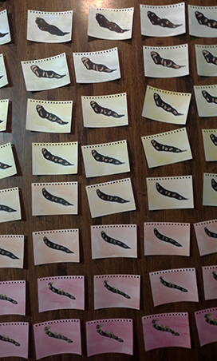

This is it, that moment when your space is clean, your materials laid out under your well practiced hand. Before you start might I make a few suggestions?
Turn off your phone.
Turn on a podcast or an album or something.
Be unavailable for those normal human things like dates or pints with the lads or unclogging your Grandma's sink.
Once you have completely removed any social options you will be better able to complete this immense task. Just cram your emotions down deep inside of you and let it come out in the work. That's it, you feel that? That is the weight of human interaction lifting away from you.
Draw!
Ok, this step sounds simple but you are making 96 images, each of which is a slightly different version of the image before it. You are going to need a Lightbox or a lightboard. I use an A4 AGPtek I picked up on Amazon. It plugs in via micro USB to any USB power source. I use a 7V portable charger and it often outlasts even my marathon scribbling sessions.
Here, in list form, is the simplest way to get from frame 001 to frame 096:
Sometimes you end up drawing more than the requirement
Turn on your Lightboard
Place the blank back of the final index card in your spirally bound packet on the lit surface
Draw something
Turn to the next index card so that the image you have drawn on frame 001 is visible through the surface of frame 002
Trace the image on frame 001 onto frame 002, making only the slightest changes in motion and movement.
Repeat the previous step until you have traced the image on frame 095 onto frame 096
Take a break, call your family and let them know you are alright, walk your long suffering dog, try not to dream about it too much ...
Good Job, that was the hardest part. Now that you have poured your soul into the containers know as frame 001 to frame 096 you can go back and begin putting color into them.
Color!
I use a mixture of colored pencil and crayons to add some life and texture to the black and white images. Keep in mind, crayons will resist the watercolor washes you will be applying next while colored pencil will be affected by the color of the wash. Colored pencil is tranlucent on the page and will show through on the lightboard whereas crayon is opaque.
Paint!

No hearts were harmed during the making of this instructable
In this instance I prepared a thick wash of Alizarin Crimson to which I began adding Cadmium Yellow at around frame 024. The Cadmium Yellow reached it's saturation point at about frame 061 after which I began adding Ultramarine.
Although this method may seem slapdash it is an efficient way to get a lot of paint onto a lot of frames.